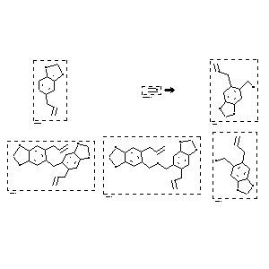

|  |
| FA | RX(1); FLST(1); RX(2) |
Reaction (1 of 1)
| Reaction ID | 1767835 |
| Reactant BRN | 136380; 1209228 |
| Reactant | 5-allyl-benzo[1,3]dioxole; formaldehyde |
| Product BRN | 174506; 5132930; 5152904; 174502 |
| Product | 5-allyl-6-chloromethyl-benzo[1,3]dioxole; di(3,4-methylenedioxy-6-allylphenyl)methane; di(3,4-methylenedioxy-6-allylbenzyl) ether; (6-allyl-benzo[1,3]dioxol-5-yl)-methanol |
| No. of Reaction Details | 2 |
Reaction Details (1 of 1)
| Reaction Classification | Preparation |
| Reagent | conc. hydrochloric acid, anhydrous CaCl2 |
| Solvent | acetic acid |
| Other Conditions | 1) 20 deg C, 4 h, 2) 60 deg C, 30 min |
| Citation Pointer | 5631982; Journal; Lurik, B. B.; Volkov, Yu. P.; JOCYA9; J.Org.Chem.USSR (Engl.Transl.); EN; 1986; 338-341; ZORKAE; Zh.Org.Khim.; RU; 22; 2; 1986; 384-387; |
Reaction Details (2 of 1)
| Reaction Classification | Preparation |
| Yield | 71 percent (BRN=174506) |
| Reagent | conc. hydrochloric acid, anhydrous CaCl2 |
| Solvent | acetic acid |
| Other Conditions | 1) 20 deg C, 4 h, 2) 60 deg C, 30 min |
| Citation Pointer | 5631982; Journal; Lurik, B. B.; Volkov, Yu. P.; JOCYA9; J.Org.Chem.USSR (Engl.Transl.); EN; 1986; 338-341; ZORKAE; Zh.Org.Khim.; RU; 22; 2; 1986; 384-387; |
Reference (1 of 1)
| Citation Number | 5631982 |
| Document Type | Journal |
| Authors | Lurik, B. B.; Volkov, Yu. P. |
| CODEN | JOCYA9; ZORKAE |
| Journal Title | J.Org.Chem.USSR (Engl.Transl.); Zh.Org.Khim. |
| Language Code | EN; RU |
| (Series) Volume | 22 |
| Number | 2 |
| Publication Year | 1986; 1986 |
| Page | 338-341; 384-387 |